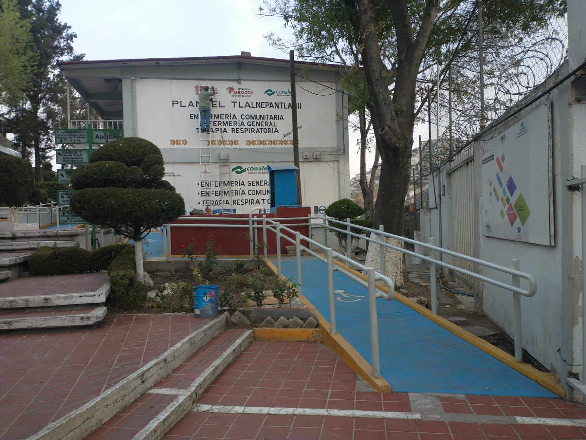
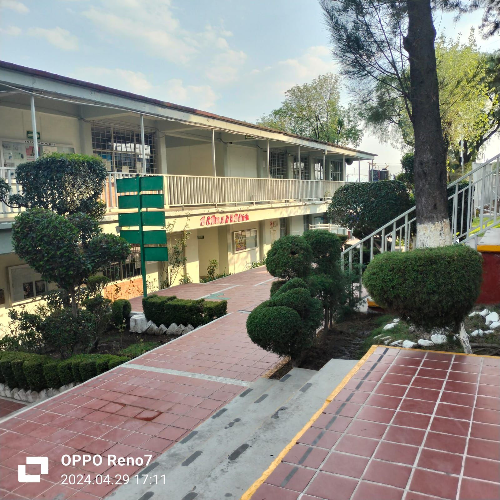

Misión
La misión central del Conalep Tlalnepantla III es brindar educación de calidad que impulse el desarrollo de competencias técnicas, científicas y humanas en sus estudiantes. Nos enfocamos en ofrecer una formación integral, no solo transmitiendo conocimientos especializados, sino también cultivando habilidades avanzadas que se alineen con las demandas profesionales. A través de un enfoque centrado en el estudiante, buscamos crear un ambiente propicio para el aprendizaje significativo y el pensamiento crítico. Nuestro objetivo es preparar a los estudiantes para sobresalir en sus campos técnicos y enfrentar los desafíos del mundo actual de manera ética y humanista. En resumen, nos comprometemos a formar individuos competentes y éticos, listos para contribuir al progreso de la sociedad.
Visión
El Conalep Tlalnepantla III tiene como visión principal formar profesionales técnicos altamente capacitados y comprometidos con su entorno. Nos dedicamos a crear un ambiente educativo donde la excelencia académica se combina con valores éticos y responsabilidad social. Buscamos desarrollar habilidades técnicas avanzadas en nuestros estudiantes, al tiempo que fomentamos su compromiso con la comunidad. Nuestro enfoque integral busca no solo prepararlos para el mundo profesional, sino también para que sean agentes de cambio éticos en sus comunidades. En resumen, aspiramos a ser un referente en la formación técnica de calidad, contribuyendo al desarrollo individual y al progreso social.
Valores
- Respeto a la Persona.
- Compromiso con la Sociedad.
- Responsabilidad.
- Comunicación.
- Cooperación.
- Mentalidad Positiva.
- Calidad.